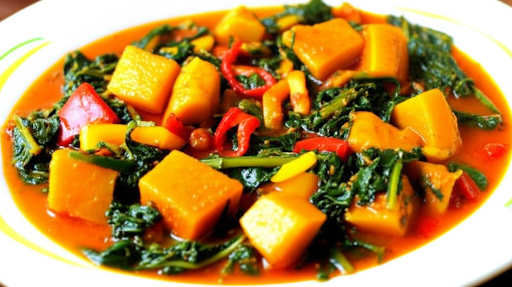

Yam-porridge

Yam-porridge
Yam-porridge is a local food in the Southern part of Nigeria
It is made from yam and other ingredients
Ingredients
- Yam
- Red oil
- dry fish
- salt
Steps
Peel, wash and cut the yam into pieces
Boil water and add red oil and other ingredients
Add the yam to the boiling mixture
Cook for about 30 minutes